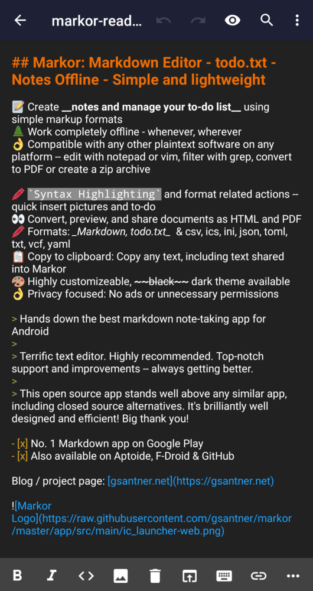
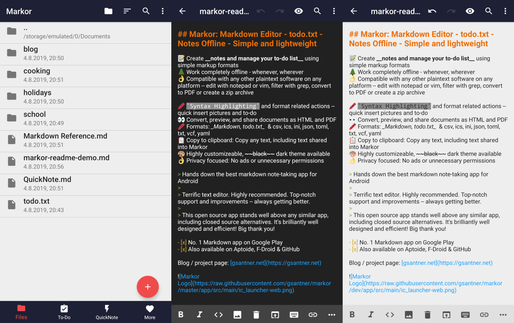

Markor 快问快答——Android 上最干净的纯文本编辑器
整理了九个关于 Markor 的高频问题：它是什么、谁适合用、权限极简到什么程度、Snippets 和 YAML front-matter 怎么玩、SD 卡挂载踩不踩坑，以及值不值得长期留在手机里。
整理一篇关于 Markor 的快问快答——把 Android 上这款纯文本编辑器大家常问的问题一次说清。
Markor 到底是什么？
Markor 是一款 Android 平台上的 纯文本优先、离线优先 的编辑器。它能写 Markdown、AsciiDoc、Org-Mode、todo.txt、纯文本，内置预览模式、代码高亮、文件夹浏览——但所有这些功能不依赖云服务，不需要账号，默认也不联网。想了解完整功能列表可以去它的官网看看。定位很明确：给想在手机上写点正经文本的人一个干净的地方。

谁适合用它？
三类人会特别喜欢 Markor。第一类是 在手机上写 Markdown 笔记 的人——比如用 Obsidian、Jekyll、Hugo 的，需要随时在外出时补几段笔记回家再同步。第二类是 重度 todo.txt 用户——Markor 对 todo.txt 格式的支持是原生的，优先级、截止日期、上下文标签都能自动识别。第三类是 在意隐私、不想让笔记被任何云端服务扫描 的人。如果你只用手机自带备忘录，可能觉得 Markor 太重；但如果你的笔记有结构、有格式、有跨平台需求，Markor 刚好踩在那个点上。
怎么装？
两个路子。要么去 Google Play 搜 Markor 直接装，要么从官方下载拿 APK 安装包手动装——两种渠道拿到的是同一个东西，都没有广告、没有推广弹窗。安装完打开，默认会引导你选一个 Notebook 根目录，之后所有文件操作都围绕这个目录进行。首次启动不需要登录，不需要填任何信息，直接就能写。
它申请了哪些 Android 权限？为什么这么少？
这是 Markor 最值得拿出来说的地方。它申请的权限加起来 只有六类，而且每一类都有明确且唯一的用途：
- 存储权限：读写本地文件——这是编辑器的生存基础
- MANAGE_EXTERNAL_STORAGE（Android 11+）：只有当你想把 Notebook 放在 Downloads、SD 卡等公共目录时才需要，内部存储目录操作不需要
- INTERNET：仅当你自己写的 Markdown 里引用了外部图片 URL 时，预览模式才需要联网加载。全用本地图片路径的话，这个权限实际上从不触发
- INSTALL_SHORTCUT：在主屏幕创建快捷方式，可选功能
- REQUEST_INSTALL_PACKAGES：用 Markor 打开 APK 文件时才用到，极少见
- 一个应用内部通信的特殊权限，用户无感知
注意 Markor 没有申请摄像头、录音、位置、通讯录、短信、蓝牙、通知这些权限——和 Google Keep（通常 15-25 个权限）形成鲜明对比。原因很简单：它的三条原则是 纯文本优先、本地存储、离线优先，一个不需要云同步、不需要推送、不需要拍照的编辑器，确实不需要那些。开发者在 README 里明确承诺：不联网、不收集、不分享任何个人数据。
YAML front-matter 怎么玩？
从 v2.9 起 Markor 能解析 Markdown 文件开头的 YAML front-matter——就是用两条 --- 包裹的那段元数据。静态站点生成器（Jekyll、Hugo、Hexo）和 Obsidian 都用这个标准格式，所以 Markor 读起来完全兼容。编辑器里 front-matter 块会用特殊样式高亮和正文区分；预览模式可以配置成显示为表格或完全隐藏。使用时注意一个坑：front-matter 必须写在文件最开头，第一条就是 ---，中间不能有空行，前面有任何空行 Markor 都会识别失败。更多配置细节可以在Markor文档里找到。这对写 Jekyll/Hugo 博客、Obsidian 知识库的人来说特别方便——手机上补笔记时也能顺便把 front-matter 字段填好。
Snippets 模板是什么？能省多少事？
Snippets 是 Markor 从 v2.9 引入、v2.10 大幅扩展的功能——写一次、到处插。把可复用的文本块放在 Notebook 根目录的 .app/snippets/ 目录里，文件名就是模板名。点底部操作栏的 Snippets 按钮弹出列表，选哪个就把那段文本插到光标位置。v2.10 之后 Snippets 同时也能当新建文件的模板用——新建 Markdown 时直接选一个模板，文件创建时就带好标准头部。
常见的 Snippets 用法：每天写会议纪要，开头的日期、参会人、议程格式固定，做成一个 meeting-header.md，每次新建会议纪要直接插入；写技术文档需要反复插 JSON 代码块模板，做成 api-response.md；用 Obsidian 的人可以把 YAML front-matter 头部做成 new-note.md，新建笔记时直接生成。唯一需要注意的点：.app/snippets/ 是隐藏目录，默认同步客户端（Syncthing、Dropbox、Nextcloud）通常会忽略以点开头的目录。如果需要跨设备同步 Snippets，要么在同步客户端里显式把 .app/ 加白名单，要么把 Snippets 放在非隐藏子目录（v2.10+ 支持）。

能把 Notebook 放 SD 卡吗？
可以，但 Android 11+ 分区存储机制下需要做专门的挂载。流程三步：先在系统设置里给 Markor 授予 MANAGE_EXTERNAL_STORAGE 权限（允许所有文件访问）；然后在 Markor 文件浏览器里浏览到 SD 卡，点底部操作栏的 挂载按钮，在向导里选一个 SD 卡子目录（不能选根目录）；最后在 Settings → General → Notebook directory 里把根目录改成刚才挂载好的那个路径，重启生效。挂载成功后 SD 卡文件名不再显示红色删除线，读写正常。
有几个坑要提前说：挂载只能针对子目录，根目录本身权限限制更多；某些老 FAT32 卡可能挂载失败，换 exFAT 卡试试；SD 卡读写速度比内部存储慢不少，加密文件时尤其明显；同步客户端在 SD 卡上的表现有时不稳定。所以推荐策略很明确：内部存储优先，空间真不够才用 SD 卡，省掉挂载的那点麻烦。
要不要付费？
免费。Markor 是开源项目，许可证 GPL v3，没有内购、没有高级版、没有订阅。桌面端对应的是 gsantner/markor 仓库，社区维护。
和同类比怎么样？值不值得长期用？
和 Notion、Evernote、Google Keep 这些云端笔记应用比，Markor 是完全不同的方向——它不做同步、不做搜索索引、不做 AI 总结、不做多人协作。但反过来，这些云端应用也不会像 Markor 那样只有六类权限、完全离线运行、文件就是纯文本原样存放在你选的目录里。和其他 Markdown 编辑器比，Markor 的优势在于 Android 平台上的深度整合：todo.txt 原生支持、SD 卡挂载方案成熟、分享面板接收文件到指定目录、Snippets 模板系统。
如果你的笔记不需要云端、不需要多人协作、在意隐私，Markor 是 Android 上几乎没有替代品的选择。如果这些对你不重要，那它可能显得太朴素。
Markor 相关的资料在GitHub、Gitee和GitCode三个仓库同步维护，国内访问 Gitee 或 GitCode 通常更快。
最后一句：对在意隐私的写作者来说，装一个。